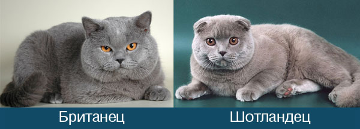

Опис породи: кого вважають британським капловухим котом
Найчастіше під британським капловухим котом мається на увазі будь-який бархатисто сірий капловухий кіт. Насправді у тварин британської породи звичайні прямі вуха, як у всіх інших котів. Капловухі кошенята можуть народитися у кішок шотландської породи - їхні вуха можуть бути загнуті вперед і вниз. Ще один різновид котів із незвичайними вухами - керли, однак у них кінчики вух загорнуті назад.
Якщо ви звернулися до розплідника та заводчик пропонує вам придбати британського капловухого кота, імовірніше, ви зіткнулися з непрофесіоналом, і, слід пошукати інших фахівців, адже шотландці та британці мають низку суттєвих відмінних рис. Так, британці є аборигенною породою, а шотландців вивели шляхом генетичних мутацій, які відповідають за загнуті кінчики вух. Відповідно, ці дві породи повністю відрізняються зовні.
-
Вуха. Породи мають різну ширину біля основи вух і їх постав. У британської породи постав вух більш широкий, вуха з великою основою нахилені в сторони, а в шотландців вуха поставлені більш високо та від самої основи мають нахил уперед. Зі свого боку шотландців поділяють на 2 різновиди: скоттіш стайт і скоттіш фолд, тобто, прямовухі та капловухі.
-
Комплекція. Структура тіла британців належить до типу cobby: вони великі, з масивною головою, їхні кістки ширші. У штучно виведеної породи кістяк тіла набагато легший, фігура більш витягнута, довгасті лапи, довший хвіст, звужений до кінчика, британцям же властивий короткий і товстий хвіст. Якщо придивитися до світлин представників цих двох порід, знайти відмінності зовсім нескладно.
Темперамент і характер
Британські кішки відрізняються доброзичливим характером, хоча перше враження може бути
оманливим -
тваринам цієї породи
властиво поводитися вкрай стримано під час знайомства, розглянути їх характер відразу досить складно,
але, з часом,
кошенята дуже прив'язуються до господаря. Британці досить активні, однак назвати їх гіперактивними
котами не можна. Вони
досить обережні під час ігор і рідко шкодять у квартирі або будинку.
Господарям британців потрібно
поважати вільний
простір свого улюбленця - подеколи британцям потрібно усамітнення і спокій, до того ж, вони не дуже
люблять тривалі
обійми з людьми, що особливо важливо, якщо в родині є маленькі діти. Водночас британці дуже люблять,
коли їх голублять,
однак вважають, що для цього зовсім не обов'язково брати їх на руки. Британці зовсім не ревнують до
інших домашніх
тварин.
На відміну від них, шотландські кішки можуть грати з дітьми, їхній характер, зазвичай, не супроводжується
сплесками
негативних емоцій. Представникам цієї породи властивий страх висоти, тому, навряд чи ви побачите свого
улюбленця на
відстані вище тумбочки. Ще один цікавий факт із поведінки шотландців - вони часто стають стовпчиком,
через що їх жартома
порівнюють із сурикатами.
Це зовсім не елемент гри, стійка в такій позі пов'язана з необхідністю
випрямити хребці. Тому,
якщо ви помітили, що куплений вами «капловухий британець» приймає таку позу, імовірніше, ви
стали
власником
шотландського кота.
Види забарвлень
Котам породи скоттіш властиві будь-які види забарвлень, а ось британці мають стандарти, хоча і вражають своєю різноманітністю, усього є понад 200 варіацій. Взагалі забарвлення враховує наступне:
- колір і малюнок шерсті
- підшерстя
- очей
- подушечок лап
- носа
Однотонні забарвлення поділяються на: біле, руде, коричневе, шоколадне, колір кориці, блакитне, лілове, колір фавн, чорне, кремове. Черепахові варіації забарвлення можуть бути чорно- або шоколадно-червоними, кремово-блакитними або фіолетовими, біколорними, димчастими, або кольором колор-пойнт. Окремо слід виділити сіамські забарвлення, які, зі свого боку, також бувають різними: чорний-, щоколадний-, блакитний-, ціннамон-, фавн-, кремовий-, червоний-пойнт, а також колор-, затушований, завуальований, димчастий колорпойнт. Усі перераховані забарвлення можуть компонуватись із білим кольором. Таббі- та малюнкові забарвлення бувають із мармуровою, плямистою, смугастою, черепаховою структурою малюнка. До окремої категорії належать золоті та сріблясті таббі-забарвлення, а також забарвлення золотиста і срібляста шиншила. Що стосується типу шерсті, то у представників шотландської породи її довжина може бути будь-якою, а шерсть британців схожа на оксамит або навіть мутон, коротка й має досить щільне, набивне підшерстя. Якщо вам пропонують купити «британського капловухого» кота, то за шерстю ви можете визначити, до якої породи він належить насправді.
Харчування
Харчування будь-якого «британського капловухого», незалежно від того, шотландець він або британець, має бути збалансованим і наділеним вітамінами. Власники котів часто сперечаються щодо того, чим годувати кота виключно сухим кормом, або можна комбінувати його з натуральною їжею, і якщо так, то з якою. Тварину можна годувати м'ясом, птицею, печінкою, вареними яйцями (але без зловживання). М'ясо обов'язково має бути вареним і не містити кісток. У м'ясо можна додавати гречку, рис або перлову кашу. Також «капловухим британцям» можна давати кисломолочні продукти, і деякі овочі: моркву, огірки, капусту. Якщо ви вирішили зупинитися на кормі, то жодного разу не змішуйте його з іншими продуктами в одній тарілці. Багато фахівців і зовсім не рекомендують годувати тварину одночасно кормом і натуральною їжею, інші дотримуються думки, що таке харчування допустимо, однак між прийманнями натуральної їжі та корму має пройти не менше 40 хвилин. Дорослих тварин годують двічі-тричі на день. Обов'язково забезпечувати кота чистою водою, яку необхідно регулярно міняти.
Догляд
Кішки, яких називають капловухими британцями, дуже охайні, тому необхідність у їхньому купанні виникає рідко. Якщо ж ви вирішили купати свого улюбленця, віддайте перевагу спеціальному котячому шампуню. Під час купання не потрібно мити геніталії, інакше тварина почне відчайдушно вириватися. Після купання не забудьте ретельно просушити шерсть і розчесати її після висихання. Британці досить сильно линяють, тому не забувайте регулярно вичісувати улюбленця, щоби шерсть не звалювалася. Приблизно раз у 2 тижні потрібно стригти кігті на передніх лапах, на задніх - рідше, раз на місяць. Незайвим буде придбати кігтеточку, щоби ваш «британський капловухий» улюбленець не унадився точити кігті о меблі.
Не забудьте проконсультуватися у ветеринара з питання вітамінів - зазвичай, їх приймають двічі на рік. У британських капловухих кішок, тобто, у британців і шотландців, можуть досить рясно текти очі, за ними потрібно стежити і протирати ватним тампоном, змоченим у воді або спеціальному розчині. Такого ж догляду вимагають і вуха вашого улюбленця, їх можна чистити за допомогою перекису водню.
Тривалість життя
Якщо вас цікавить тривалість життя британських капловухих котів, слід зазначити, що в британців і шотландців вона відрізняється. Скоттішей можна вважати справжніми довгожителями, адже вони можуть прожити до 20 років. Середня тривалість життя британців - до 15 років. У будь-якому разі, тривалість життя вашого улюбленця цілком залежатиме від вас - якісне харчування, догляд і вихованець буде радувати вашу сім'ю довгі роки.
Більш детально про шотландських котів